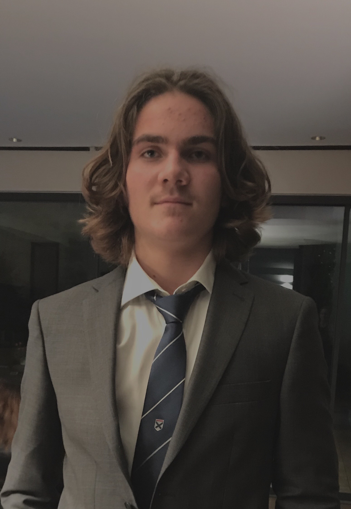

Théo Vicard
Bonjour, je m'appelle Théo et je vis à Bordeaux. J'ai 18 ans et j'étudie en première année à l'IÉSEG. Je vais maintenant vous parler de mes expériences sportives et associatives.
Sport 🎾
Je suis un passionné de tennis : cela fait 13 ans que j'en fait et 8 ans que je fais des tournois. J'ai été classé 15 et j'ai participé aux championnats de france par équipe en 2014.
Expériences Associatives
En parallèle du sport, j'ai été membre de la commission événementielle au lycée Saint-Josephde Tivoli, et je suis actuellement membre de l’Association « Le Pain de l’Amitié », qui distribue de la nourriture aux sans domicile fixe.